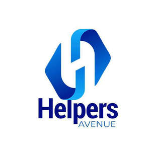

Trade Mark Journal No.2025/014 4 April 2025
UK00004144471 7 January 2025 (35,37,43,44)

- Class 35
- Recruitment and staffing services providing skilled professionals across the healthcare, domestic, and hospitality sectors; Specializing in the recruitment of care assistants, nurses, and support workers for supported living, residential homes and complex care; Supplying domestic staff, including cleaners, housekeepers, and maintenance personnel, for residential and commercial properties; Offering hospitality staffing solutions, such as chefs, servers, and event personnel, tailored to private and corporate client needs; Delivering temporary, permanent, and contract staffing with a focus on rigorous vetting, seamless placements, and exceptional service delivery.
- Class 37
- Provision of professional cleaning services, including home cleaning, hospital cleaning, and general cleaning services; specialized cleaning of residential and commercial properties; deep cleaning, sanitization, and maintenance of healthcare facilities; floor, carpet, and upholstery cleaning; window cleaning; post-construction cleaning; and general housekeeping and janitorial services; Specialized services include property management, maintenance, and refurbishment to ensure safe and high-quality living environments.
- Class 43
- Provision of property and housing services, including emergency housing solutions for individuals in need, short-term and long-term accommodation for vulnerable groups, and supported living arrangements.
- Class 44
- Provision of Mental Health Support Services; Rehabilitation Services; Respite Care Services; Specialised Nursing Care; Healthcare Consultancy and Advisory Services; Provision of health care services; Providing long-term care facilities.
HELPERS AVENUE LTD